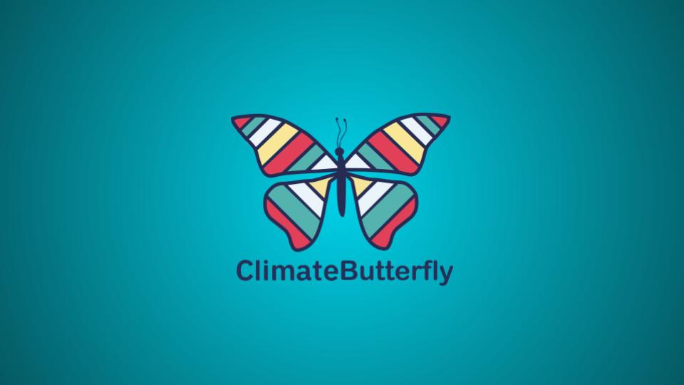
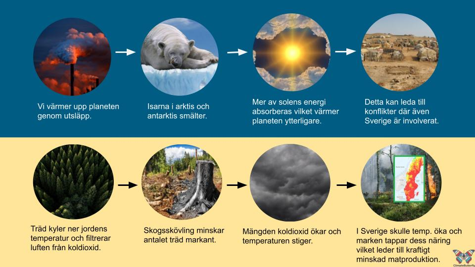
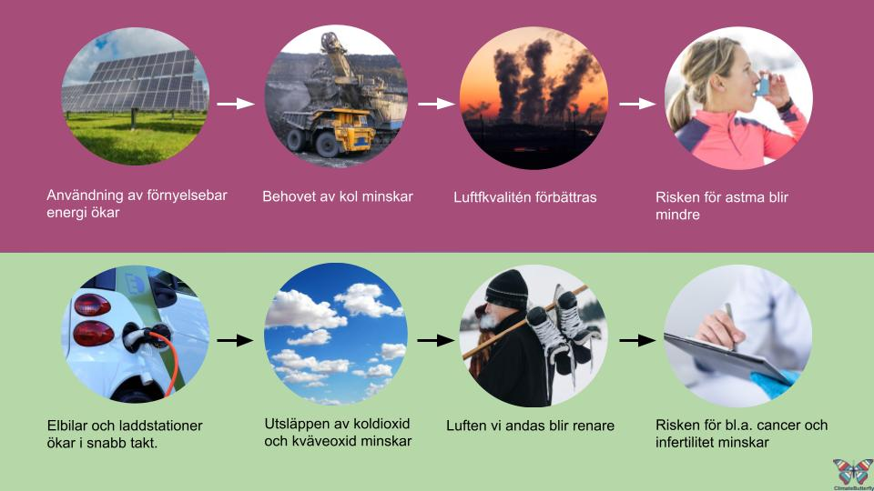

Climate View
Uppdrag
“How to visualize climate data in an understandable way to the general public?” Detta var frågan som jag och tre andra studenter undersökte. Klienten var företaget Climate View under vår kurs “Analys och stategi”. Ändamålet med kursen var att djupdyka ner i första fasen av “The design thinking phase” - empati, definera och idégenerera.
Viktiga insikter
Projektet
Arbetsprocessen
Strategi
Vi valde att fokusera på två olika grupper. Noviser och experter inom klimatområdet. Detta för att få en så bred uppfattning som möjligt och för att förstå och finna problem inom de olika målgrupperna.
Metoder
Rekommendation
Med kognitiv dissonans i åtanke landade vi i en lösning för så väl noviser som experter. Ett verktyg som visar både positiva och negativa kedjereaktioner. Genom att visa hur individen själv påverkas är sannolikheten större att aktivitet och betéendeförändringar sker till klimatets fördel. Vi kallar detta vertyg för ClimateButterfly.
Prototyp
Ogynsamma förändringar
Gynsamma förändringar
